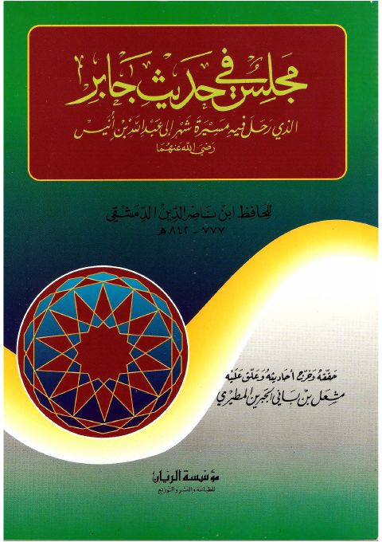

Downloads need an internet connection.
مجلس في حديث جابر الذي رحل فيه مسيرة شهر إلى عبد الله بن أنيس رضي الله عنهما
Authors: ابن ناصر الدين الدمشقي
Editors: مشعل بن باني الجبرين المطيري
Publishers: مؤسسة الريان
**▫️ العنوان: مجلس في حديث جابر الذي رحل فيه مسيرة شهر إلى عبد الله بن أنيس رضي الله عنهما** ▪️ المؤلف: #ابن_ناصر_الدين_الدمشقي ▫️ المحقق: #مشعل_بن_باني_الجبرين_المطيري ▪️ الناشر: #مؤسسة_الريان_للطباعة_والنشر_والتوزيع ▫️ تاريخ النشر: 1415هـ 1995م ▪️ بلد النشر: بيروت، #لبنان ▫️ الطبعة: 1 ▪️ عدد الأجزاء: 1 ▫️ الصفحات: 61 ▪️ نوع الوعاء: #كتاب ▫️ التصنيف الرئيسي: #الحديث_وعلومه ▪️ التصنيف الفرعي: #الأجزاء ۪